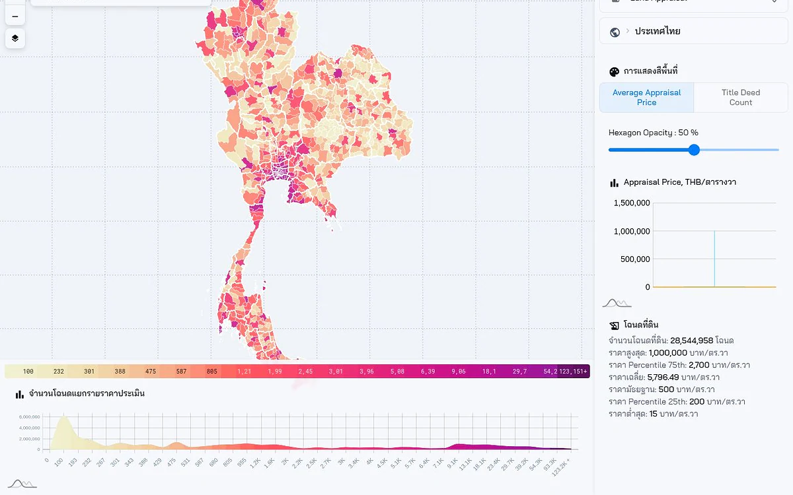
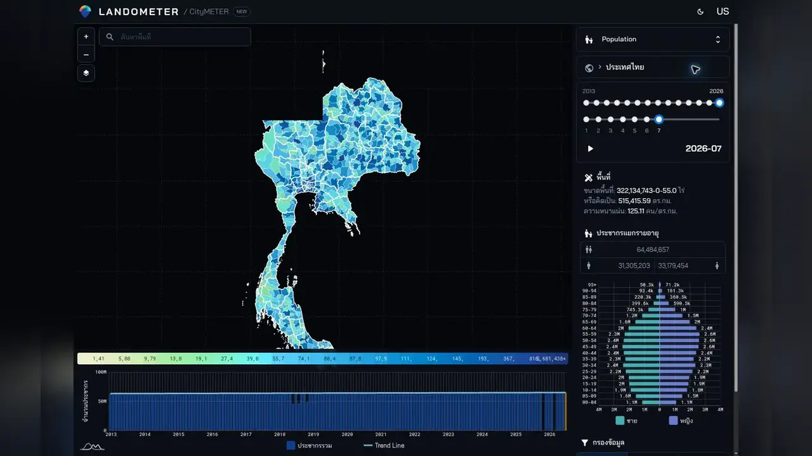
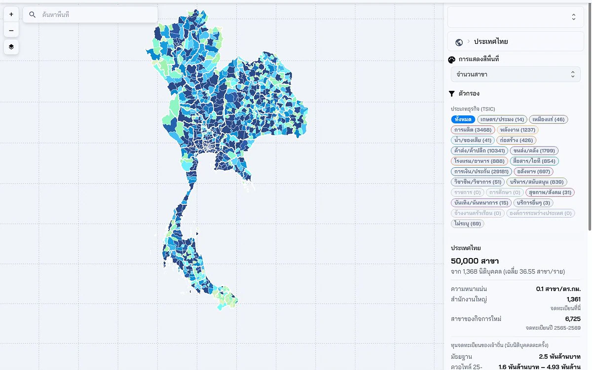
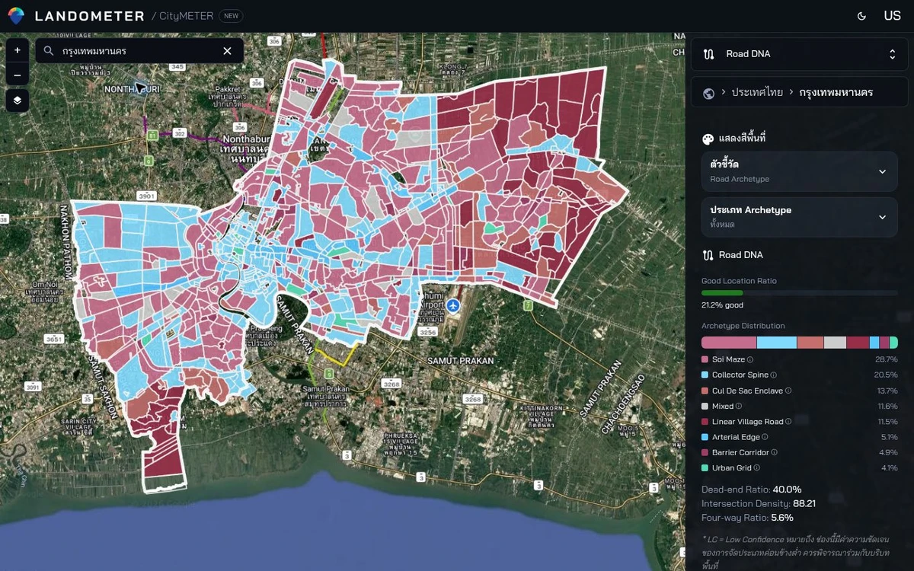
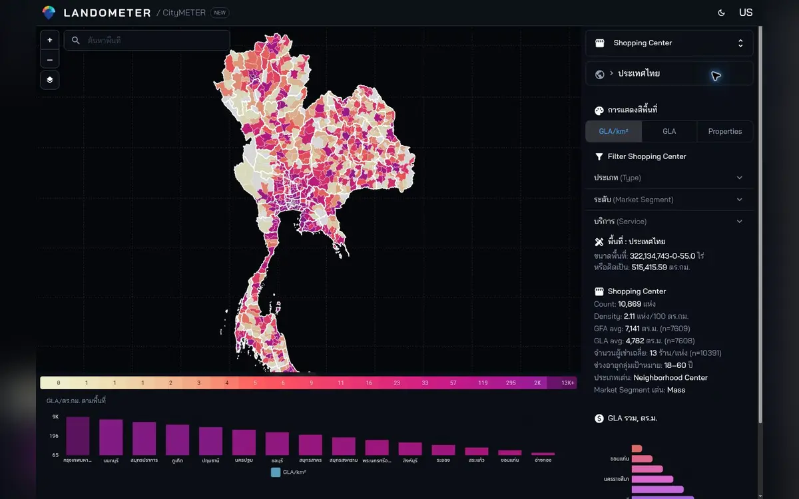
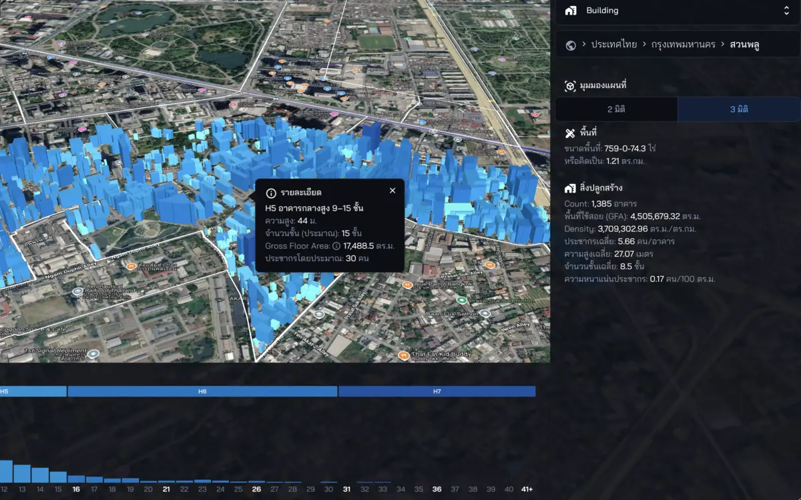
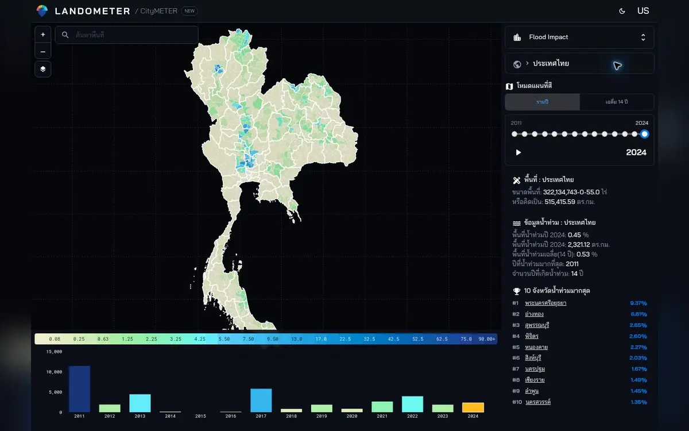
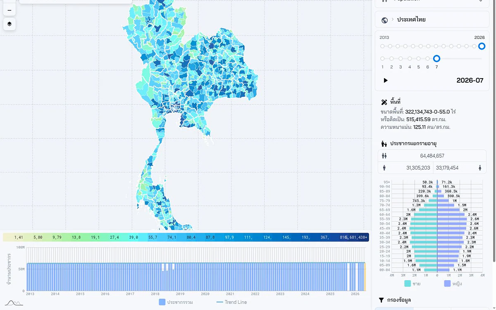

Appraisal · deed countsLandowners · developers · investors
Where should we buy, hold or develop?
Compare buildings, prices and nearby constraints to find the places worth checking before you invest.
Place data for real decisions
Explore buildings, prices, businesses, people, access and risk through real data, then open the place you need.
Measure What Matters. Make It Actionable.

Real CityMETER screen examplesThe demo video has no sound
Start with the decision
Choose a question to see a working example and the relevant data—no dataset names to memorise.

Appraisal · deed countsLandowners · developers · investors
Compare buildings, prices and nearby constraints to find the places worth checking before you invest.
Open the real thing
Each example points out what matters and keeps the coverage and material limitation close at hand.

HQ · branches · new activityTell the 50,000-branch network story through headquarters, sectors, and newly registered branches

Road types · dead ends · intersectionsPair coloured archetype areas on the satellite map with dead-end and intersection metrics

GLA · tenants · segmentCompare retail structure through supply, leasable area, tenant scale, and market segment

GFA · height · floorsPair the province comparison map with GFA, height, and floor metrics to explain development intensity

14 years · recurrence · worst yearUse the 14-year timeline, recurrence count, and worst year as the historical risk baseline

Age · sex · densityUse age-sex structure and density as baseline context for market reading and service planning
Explore the data
Search by topic or browse a group to see examples, coverage and a direct link.
Pair the province comparison map with GFA, height, and floor metrics to explain development intensity
Do not imply that every building is covered or that individual building geometry is publicly available
Bring project counts, plot counts, and developer ranking into one frame
This represents registered estates and should not stand in for every housing development
Compare IEE, EIA, and EHIA project counts alongside their location context
Use for initial context, not as a determination of development rights or approval status
Use crop type, cultivated area, output, and period to explain agricultural land context
Confirm geographic coverage before comparing aggregate totals between places
Pair the province appraisal map with title-deed counts and price distribution
Appraisal values are not transaction prices and do not replace document checks for a specific property
Show listing supply and price-per-square-wah distribution as an asking-market signal
Listing prices are not closing prices; duplicate and outlier handling is not yet documented
Use average rent and price ranges to compare rental-market signals between areas
Do not present this as the entire rental market or as current rent for every building
Use P25, P50, and P75 as a value baseline before comparing listing prices
Appraisal values are neither listing prices nor transaction prices
Pair asking prices with appraisal values to reveal the gap before project-level analysis
Asking prices are not closing prices; duplicate and outlier handling is not documented
Compare price ranges with land size so the detached-house story is not reduced to one number
These are asking prices, and source coverage is not yet documented
Use listing counts and percentiles to show both supply and the price range
Asking prices are not closing prices, and the current empty-state copy names the wrong property type
Lead with rent, estimated yield, and investment-score cards rather than a wall of listings
Yield is estimated from listings and is not a guaranteed return
Use company status and capital distribution to explain the business base for the stated period
This is separate from Business Dynamics and should not be presented as every legal entity in Thailand
Tell the 50,000-branch network story through headquarters, sectors, and newly registered branches
This is not a count of every business or actual openings and closures; branch definitions, sampling, and linkage still need documentation
Combine factory, worker, capital, and machinery metrics into one industrial-base story
Definitions, source, and registry coverage are not yet documented on the public page
Use building supply, area, age, floors, and asking rent to frame Bangkok's office market
The evidenced scope is Bangkok, and asking rent is not contracted rent
Use density, reviews, and price bands to explain the local food-competition context
Restaurant and review counts are not demand or customer counts; source and collection date are not documented
Compare retail structure through supply, leasable area, tenant scale, and market segment
Field coverage differs: GFA and GLA are about 70%, while tenant count is about 95.6% in the audited records
Use hotel supply, rooms, ADR, and the seasonal curve to frame the market and an initial comparison set
Source, method, and coverage are not documented, so this should not stand in for occupancy or bookings
Use visitors, spending, spend per visitor, change, and province ranking to tell the demand story
Visitor and spending definitions, market split, and revision policy need confirmation before policy use
Use station counts, density, and fuel mix to explain automotive-service availability
Station definition, registry scope, effective date, and EV, LPG, and NGV counts still need confirmation
Pair the province map with brand, model, category, and period to explain the registered-vehicle base
The counted object still needs confirmation as cars or all vehicle types, and should not be read as travel behaviour
Pair coloured archetype areas on the satellite map with dead-end and intersection metrics
A network archetype is not observed traffic or an access score; show the confidence state when available
Use speed, congestion, and the seven-day trend when the feed status is available
A delayed or unavailable feed does not mean free-flow traffic, and no public update SLA is stated
Frame what should be validated in the field rather than presenting behaviour as fact
Use only for service planning, field validation, engagement, and prioritisation; aggregation requires a verified boundary crosswalk
Use age-sex structure and density as baseline context for market reading and service planning
This is not daytime population, income, service eligibility, or evidence of local behaviour
Use school, student, teacher, and ratio metrics to explain education-service context
Counts and ratios are not school quality, access, or remaining capacity
Use revenue per person, per area, and revenue mix to compare local-finance context
Revenue is not overall service quality or fiscal capacity; read it with the accounting year and denominator definitions
Use agency, workforce, density, and contact metrics to explain structural service context
Contact coverage is not service availability or quality, and denominator definitions still need confirmation
Use the 14-year timeline, recurrence count, and worst year as the historical risk baseline
Historical recurrence is neither current conditions nor a forecast and does not replace a statutory risk determination
Make the observation date more prominent than the word ‘latest’ when showing detected flood areas
The latest observed layer is a dated snapshot, not present conditions
Use flooded area, maximum and average depth, and run time to prioritise follow-up
Model output is not confirmation of an event; show run time, source, method, and limitations
Use the 24-hour risk levels, province ranking, and run time as a monitoring story
This is a model signal, not confirmation that an event will occur; retain the experimental status
Use station locations, MMI, acceleration, and update time to explain the sensing network
Freshness must remain visible; the inspected page showed an update date of 10 March 2026
Use the time-window control as the visual and clearly mark the data object as awaiting confirmation
The data object is not yet confirmed as a hotspot, burned area, or incident, so risk conclusions are not supported
Use hazard type, year, and impacts on people, households, businesses, and assets to tell the historical story
Historical impacts are not current risk; period, source, and reporting limitations still need documentation
Pair the 24–27 November timeline with people and building context in the event area
This is a Hat Yai event archive, not a reusable flood layer or a full impact assessment
Use inspection-status charts and comments to explain post-event follow-up
This is not a sensor network, structural certification, or a current inventory of every inspected building
Continue on your phone
Scan the QR code to open the same page and data, then choose the decision you want to explore.
Already have a place or decision in mind?
Send us the place and decision. We can point you to the relevant data and what still needs checking.